安装 GeoServer
此系列文章使用的是GeoServer 2.11.2 和Windows系统，并且使用的是JRE8， 使用其他版本可以作参考。
安装
首先下载JRE8 并安装，然后下载GeoServer，如果对每个版本不清楚就选择 Stable版本，选择合适的安装包，这里我选择的是Windows Installer。
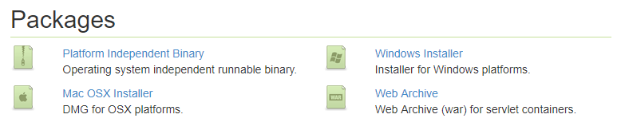
下载完成后，双击安装文件运行。
在欢迎界面点击 Next。
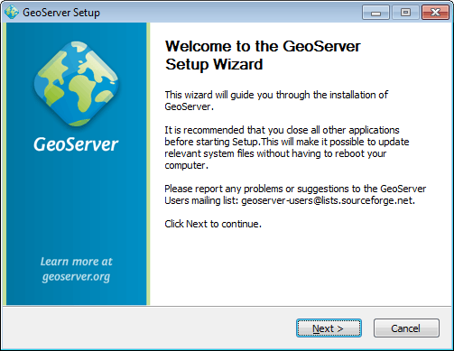
阅读许可，点击 I Agree。
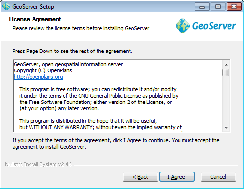
选择安装目录，然后点击 Next。
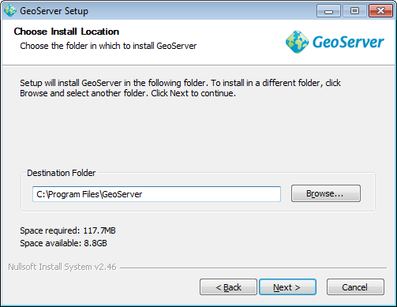
选择开始菜单文件夹名和位置，然后点击 Next。
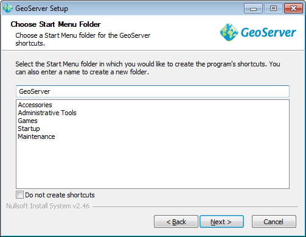
选择JRE的安装目录，GeoServer需要验证JRE的有效性。安装程序会尝试从系统中寻找JRE的路径并显示在文本框中， 如果没有找到你就需要手动选择安装路径，然后点击 Next。
注意： Windows中的路径通常是
C:\Program Files\Java\jre8。
注意： 不要在JRE路径中包含
\bin。假如java.exe位于C:\Program Files (x86)\Java\jre8\bin\java.exe，只需设置路径为C:\Program Files (x86)\Java\jre8。
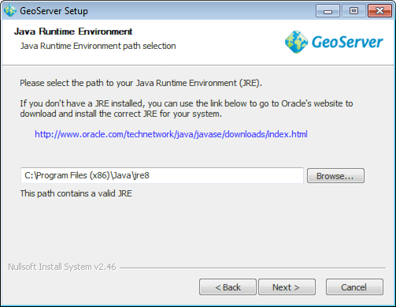
输入GeoServer的默认数据目录。如果你是第一次使用GeoServer，选择 Default data directory， 点击 Next。
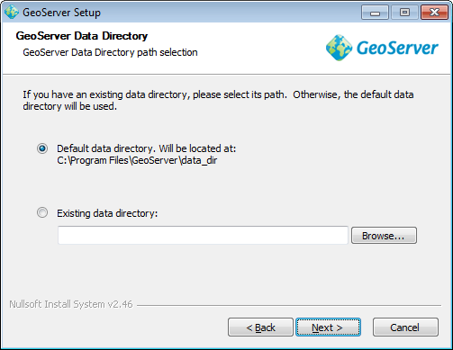
输入GeoServer管理员账号的用户名和密码。GeoServer的web管理界面需要认证才能使用， 这里输入的就会成为管理员账号。默认账号密码是 admin/geoserver。建议修改默认值， 然后点击 Next。
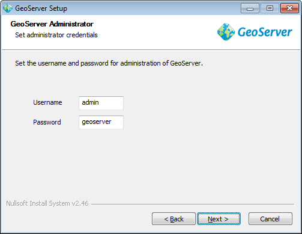
输入GeoServer将要使用的端口号。这将影响到GeoServer的Web管理界面，也会影响到GeoServer的服务， 比如Web Map Service (WMS) 和 Web Feature Service (WFS)。 默认的端口是 8080，所有有效的并且没有使用的端口都可以，设置完成后点击Next。
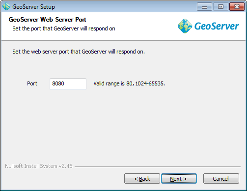
选择GeoServer手动启动还是作为一个服务安装。如果是手动启动，GeoServer就像一般程序那样点击运行。 如果是作为服务安装，GeoServer就会整合到Windows服务中，这样有利于管理。这里我选择的是 Run manually， 然后点击 Next。
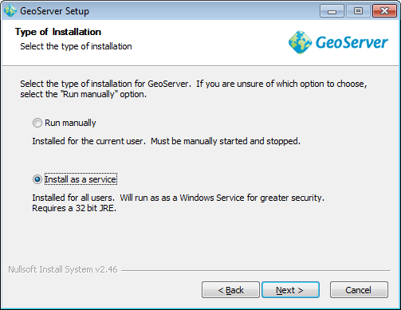
回顾一下安装信息，如果又需要修改的地方点击 Back 进行修改，否则就可以点击 Install 开始安装。
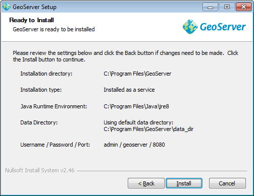
安装完后点击 Finish 关闭安装程序。如果作为服务安装，则服务已自动启动；如果选择手动， 就可以在开始菜单中找到 Start GeoServer，点击启动服务。
最后可以浏览http://localhost:8080/geoserver(或者安装时设置的其他端口号)进入Web管理界面。
卸载
在开始菜单中GeoServer文件夹下运行uninstall.exe卸载，或者在Windows程序管理中卸载。